🚨 Mission 08 : Améliorer les interactions utilisateur dans les sujets avec des cartes adaptatives¶
🕵️♂️ NOM DE CODE : OPÉRATION AMÉLIORATION DE L'INTERFACE¶
⏱️ Durée de l'opération :
~45 minutes
🎥 Regardez la vidéo explicative
🎯 Résumé de la mission¶
Agents, votre mission est d'infiltrer l'expérience utilisateur statique et de la remplacer par des cartes adaptatives riches, dynamiques et interactives. Vous allez déployer des charges utiles JSON et des formules Power Fx pour transformer les conversations dans Copilot Studio, passant d'un simple Q&R à des interactions pleinement engageantes. Votre objectif est de recueillir des informations utilisateur, de présenter des données de manière attrayante et de diriger les conversations avec précision et style. Échouez à vous adapter, et vos utilisateurs pourraient se tourner vers des interfaces moins intelligentes.
🔎 Objectifs¶
Dans cette mission, vous apprendrez :
- Comprendre ce que sont les cartes adaptatives et comment elles améliorent les interactions utilisateur dans Copilot Studio
- Apprendre à créer des cartes interactives en utilisant JSON et des formules Power Fx pour du contenu dynamique
- Explorer le concepteur de cartes adaptatives et ses composants clés pour la création visuelle de cartes
- Créer des formulaires riches et interactifs ainsi que des expériences de collecte de données dans les sujets des agents
- Mettre en œuvre les meilleures pratiques pour concevoir des cartes adaptatives réactives et conviviales
🤔 Qu'est-ce qu'une carte adaptative ?¶
Une carte adaptative est un moyen de créer des éléments d'interface utilisateur interactifs et visuellement riches qui peuvent être intégrés dans des applications comme Microsoft Teams, Microsoft Outlook ou des agents. C'est un objet JSON structuré qui définit la mise en page et le contenu d'une carte :
- Quels éléments apparaissent sur la carte - texte, images, boutons
- Comment ces éléments sont organisés
-
Quelles actions les utilisateurs peuvent effectuer, comme soumettre un formulaire ou ouvrir un lien
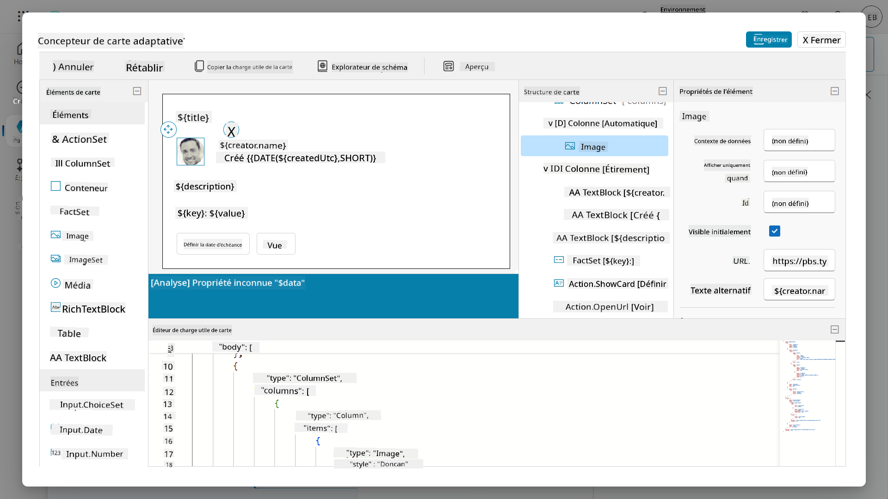
Pourquoi les cartes adaptatives sont importantes dans Copilot Studio¶
Imaginez que vous construisez un agent qui demande aux utilisateurs leur nom, leur email ou leur avis. Si vous utilisez simplement du texte brut, la conversation peut sembler ennuyeuse ou difficile à suivre. C'est là que les cartes adaptatives interviennent !
-
Rend les conversations interactives - au lieu d'envoyer du texte comme messages à l'utilisateur, vous pouvez afficher des boutons, des formulaires, des images et plus encore.
- Exemple : une carte peut demander à l'utilisateur de remplir son nom et son email dans un formulaire clair.
-
S'adapte partout - Les cartes adaptatives s'adaptent automatiquement au style de l'application dans laquelle elles se trouvent, comme le chat Microsoft 365 Copilot ou Microsoft Teams. Vous n'avez pas à vous soucier du mode sombre, des polices ou des mises en page - elles s'adaptent.
-
Facile à construire avec JSON - vous définissez la carte en utilisant du code JSON (pensez à une recette pour l'interface utilisateur). Copilot Studio vous aide à prévisualiser votre carte avant de l'ajouter au sujet.
-
Collecter et utiliser des données - vous pouvez utiliser la carte pour poser des questions, recueillir des réponses et utiliser ces données dans le flux de conversation.
- Exemple : Demandez le numéro de téléphone d'un utilisateur, puis affichez une carte de confirmation avec son numéro de téléphone.
-
Améliorer l'expérience utilisateur - les cartes rendent votre agent plus interactif. C'est une interface plus propre, cliquable et conviviale.
🐱 JSON est-il une personne ?¶
Prononcé "Jason", ce n'est pas une personne 😅
JSON, également connu sous le nom de JavaScript Object Notation, est un format léger utilisé pour structurer des données. Il est facile à lire et à écrire, et ressemble à une série de paires clé-valeur entre accolades {}.
C'est l'une des options à utiliser lors de l'ajout d'une carte adaptative à votre sujet.
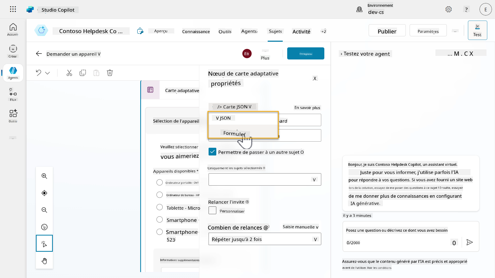
👀 Je vois une autre option pour créer une carte adaptative en utilisant une formule¶
Vous vous souvenez de ce que nous avons appris sur Power Fx dans Mission 07 - Utiliser Power Fx dans vos nœuds ? La même chose peut être appliquée dans les cartes adaptatives au sein de Copilot Studio.
En résumé,
Note
Power Fx est un langage de programmation low-code utilisé pour ajouter de la logique et un comportement dynamique à votre agent. C'est le même langage utilisé dans Microsoft Power Apps, et il est conçu pour être simple et semblable à Excel, ce qui le rend facile pour les développeurs et les non-développeurs.
Comment Power Fx fonctionne dans les cartes adaptatives¶
Lorsque vous concevez une carte adaptative dans Copilot Studio, vous pouvez utiliser des formules Power Fx pour :
- Insérer dynamiquement des valeurs telles que des noms d'utilisateur, des dates ou des statuts.
- Formater du texte ou des nombres, comme afficher une devise ou arrondir des nombres.
- Afficher ou masquer des éléments en fonction de conditions.
- Personnaliser les réponses en fonction des entrées utilisateur, des variables, des résultats des nœuds de conversation.
Par exemple,
"Bonjour" & System.User.DisplayName
Cette formule combine le mot "Bonjour" avec le nom de l'utilisateur de manière dynamique.
Pourquoi c'est utile¶
-
Personnalisation
Vous pouvez adapter les messages à chaque utilisateur, rendant les interactions plus naturelles et pertinentes.
-
Contenu dynamique
Les cartes peuvent afficher des données réelles provenant de variables et de résultats des nœuds de conversation.
-
Logique intelligente
Vous pouvez contrôler ce que les utilisateurs voient ou avec quoi ils interagissent en fonction de conditions, améliorant ainsi l'utilisabilité et réduisant les erreurs.
-
Facile à utiliser pour les non-développeurs
Power Fx est un langage de programmation low-code. Comme mentionné précédemment, il est lisible, intuitif et similaire aux formules Excel.
👷🏻♀️ Construire avec le concepteur de cartes adaptatives¶
Le concepteur de cartes adaptatives est un outil visuel qui vous permet de créer des cartes de messages interactives en utilisant des éléments glisser-déposer comme du texte, des images, des boutons et des champs de saisie. Son objectif est de vous aider à créer des messages riches et dynamiques sans écrire de code complexe, facilitant ainsi la conception d'interfaces conviviales.
L'outil de conception vous aide à construire la carte visuellement, mais en coulisses, il génère l'objet JSON pour vous. Vous pouvez également passer à formule, ce qui permet d'utiliser des expressions Power Fx dans la carte pour afficher des données provenant d'autres sources.
🎨 Comprendre le concepteur de cartes adaptatives¶
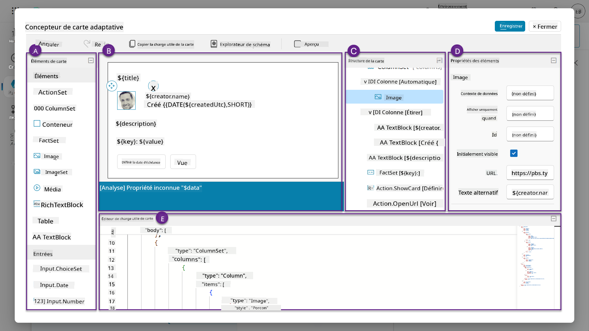
A) Éléments de la carte¶
Ce sont les blocs de construction de votre carte adaptative. Vous pouvez glisser-déposer des éléments tels que :
- TextBlock pour afficher du texte.
- Image pour montrer des images.
- FactSet pour des paires clé-valeur.
- Champs de saisie pour afficher des zones de texte, des sélecteurs de date, des cases à cocher.
- Actions pour afficher des boutons comme Soumettre, Ouvrir une URL ou Afficher une carte.
Chaque élément a son propre rôle et peut être stylisé ou configuré.
B) Visionneuse de carte¶
C'est la zone de prévisualisation où vous voyez à quoi ressemblera votre carte en temps réel. À mesure que vous ajoutez ou modifiez des éléments, la visionneuse se met à jour instantanément pour refléter les changements. Cela vous permet de faire des mises à jour itératives et de voir le résultat du design en même temps.
C) Structure de la carte¶
Cela montre la hiérarchie et la mise en page de votre carte. Par exemple :
- Une carte peut commencer par un TextBlock pour le titre.
- Puis un ColumnSet avec une image d'un côté et du texte de l'autre.
- Suivi par un FactSet et quelques boutons d'action.
Cela vous aide à comprendre comment les éléments sont imbriqués et organisés.
D) Propriétés des éléments¶
Lorsque vous cliquez sur un élément de la carte, ce panneau vous permet de personnaliser ses paramètres :
- Modifier la taille, le poids ou la couleur du texte.
- Définir les URL des images ou le texte alternatif.
- Configurer les options de saisie comme le texte d'espace réservé ou les valeurs par défaut.
C'est ici que vous affinez chaque élément.
E) Éditeur de charge utile de la carte¶
C'est le code JSON brut derrière votre carte. Les utilisateurs avancés peuvent l'éditer directement pour :
- Utiliser des fonctionnalités de modélisation.
- Copier/coller des définitions de cartes.
Même si vous débutez avec le concepteur de cartes adaptatives, il est utile de voir comment le design visuel se traduit en code.
Astuce - Consultez les exemples de cartes adaptatives
- Accédez à https://adaptivecards.microsoft.com/designer.
- Sélectionnez Nouvelle carte pour voir une liste d'exemples que vous pouvez choisir et modifier.
- Notez que ce concepteur est externe (basé sur le web). Lorsque vous créez votre carte dans le concepteur de cartes adaptatives basé sur le web, copiez le JSON depuis l'éditeur de charge utile de la carte.
- Collez le JSON dans votre carte adaptative dans votre agent dans Copilot Studio.
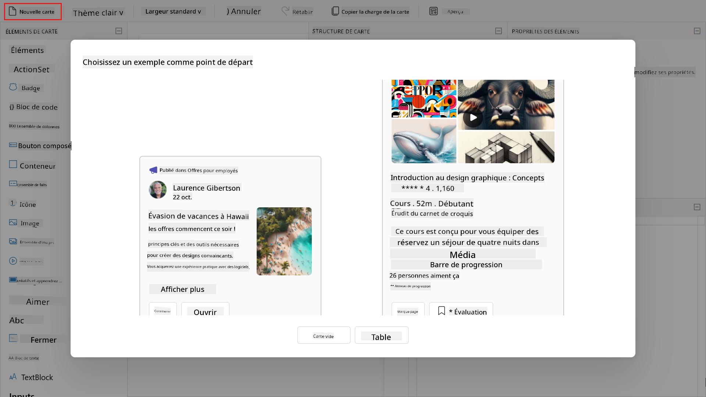
🌵 Cas d'utilisation courants¶
Voici quelques cas d'utilisation courants des cartes adaptatives dans Copilot Studio lorsqu'elles sont utilisées dans les nœuds Envoyer un message ou Poser une question.
-
Formulaires et collecte de données
Utilisez des cartes adaptatives pour recueillir des informations structurées auprès des utilisateurs, telles que :
- Demandes de congé
- Formulaires de feedback
- Informations de contact
- Planification de rendez-vous
-
Affichage d'informations dynamiques
Affichez aux utilisateurs des données personnalisées ou en temps réel dans un format clair et lisible provenant de sources d'entreprise telles que ServiceNow, SAP, Dynamics 365, SharePoint, etc.
- Résumés de commandes
- Soldes de comptes
- Statut de ticket ou de dossier
- Événements ou échéances à venir
-
Choix interactifs
Permettez aux utilisateurs de faire des sélections directement dans la conversation :
- Choisir parmi une liste d'options, par exemple des catégories de produits, des sujets de support.
- Confirmer ou annuler une action.
- Évaluer un service ou une expérience.
-
Déclenchement d'actions
Incluez des boutons qui déclenchent des étapes supplémentaires dans la conversation, en interne ou en externe.
- "Soumettre une demande"
- "Voir les détails"
⭐ Meilleures pratiques¶
Voici quelques meilleures pratiques pour créer des cartes adaptatives pour les agents dans Copilot Studio.
-
Restez simple et ciblé
- Concevez des cartes avec un objectif clair, ne les surchargez pas avec trop d'éléments.
- Utilisez un texte concis et des mises en page intuitives pour guider les utilisateurs dans l'interaction.
-
Soyez intentionnel avec les champs de saisie
- Incluez uniquement les éléments de saisie nécessaires tels que le texte, les choix de date, pour éviter de submerger les utilisateurs.
- Utilisez des étiquettes pour rendre les champs de saisie faciles à comprendre.
-
Structurez pour la lisibilité
- Utilisez des TextBlocks pour les titres et les instructions.
- Regroupez les éléments liés en utilisant des Containers ou des ColumnSets pour améliorer le flux visuel.
-
Rendez les éléments d'action clairs
- Utilisez Action.Submit et/ou Action.OpenUrl avec des titres de boutons clairs comme "Soumettre une demande" ou "Voir les détails".
- Évitez les étiquettes vagues comme "Cliquez ici".
-
Concevez pour l'adaptabilité
- Supposez que la carte peut être vue sur différents formats d'écran.
- Évitez les largeurs fixes et utilisez des mises en page flexibles comme ColumnSets pour la réactivité.
-
Utilisez du contenu dynamique autant que possible
- Liez les éléments de la carte à des variables ou des résultats de nœuds en utilisant Power Fx pour personnaliser l'expérience utilisateur.
- Par exemple, affichez le nom de l'utilisateur ou le statut actuel de manière dynamique.
🧪 Lab 08 - Ajouter des cartes adaptatives et améliorer les capacités des sujets¶
Nous allons maintenant apprendre à améliorer notre sujet avec des cartes adaptatives et en utilisant des fonctionnalités avancées des sujets et des nœuds.
- 8.1 Créer un nouveau sujet avec une carte adaptative pour que l'utilisateur soumette sa demande
- 8.2 Mettre à jour les instructions de l'agent pour invoquer le sujet Demande de dispositif
✨ Cas d'utilisation¶
En tant que employé
Je veux demander un dispositif
Afin de pouvoir demander un dispositif parmi la liste des dispositifs disponibles
Commençons !
Prérequis¶
-
Liste SharePoint
Nous utiliserons la liste Devices de SharePoint issue de Leçon 00 - Configuration du cours - Étape 3 : Créer un nouveau site SharePoint.
Si vous n'avez pas configuré la liste Devices de SharePoint, veuillez revenir à Leçon 00 - Configuration du cours - Étape 3 : Créer un nouveau site SharePoint.
-
Contoso Helpdesk Copilot
Nous allons utiliser le même agent créé précédemment dans Leçon 06 - Créer un agent personnalisé en utilisant le langage naturel avec Copilot et en le reliant à vos données.
8.1 Créer un nouveau sujet avec une carte adaptative pour que l'utilisateur soumette sa demande¶
Nous allons créer un nouveau sujet qui gérera la demande de dispositif d'un utilisateur. Ce nouveau sujet contiendra un nœud Demander avec une carte adaptative pour permettre l'interaction utilisateur avec l'agent.
Commençons !
-
Sélectionnez l'onglet Sujets, puis sélectionnez + Ajouter un sujet à partir de zéro.
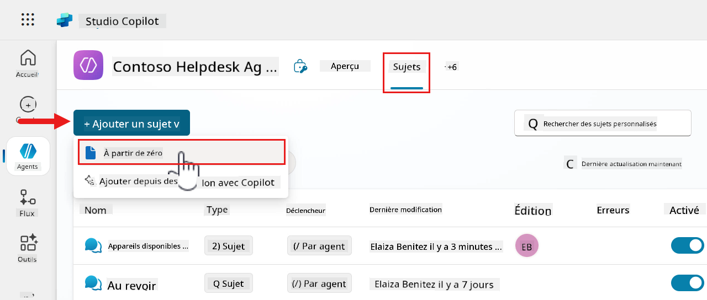
-
Nommez le sujet comme suit,
Entrez la description suivante pour le déclencheur.
This topic helps users request a device when they answer yes to the question that asks the user if they would like to request one of these devices.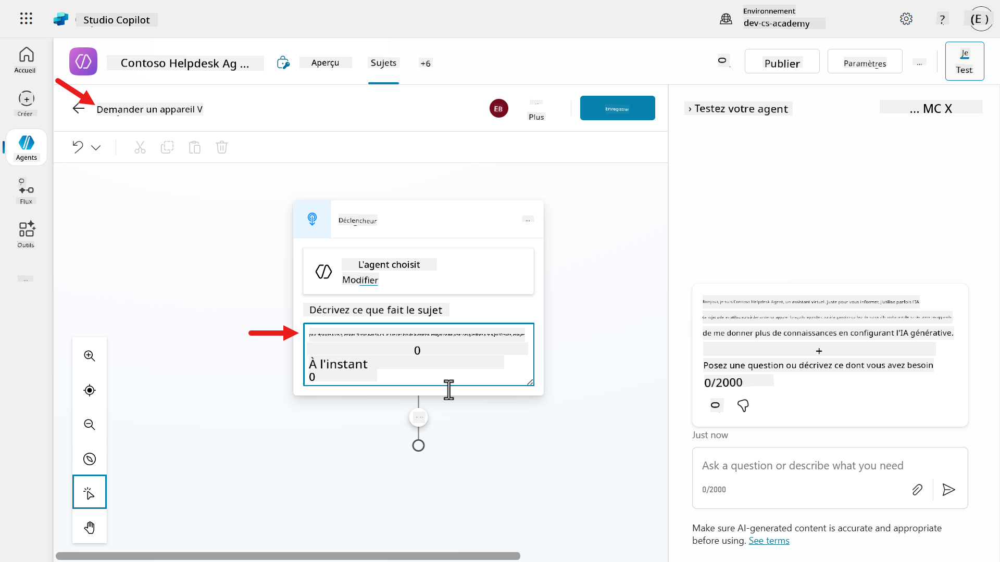
1. Ensuite, ajoutez un nœud Demander avec carte adaptative. Ce nœud affichera une carte interactive permettant à l'utilisateur de sélectionner l'appareil qu'il souhaite demander.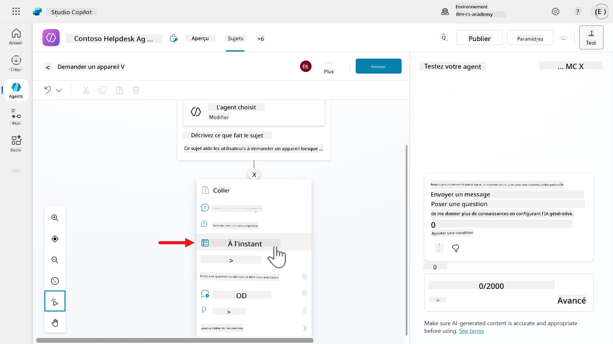
-
Sélectionnez le nœud et le volet Propriétés du nœud de carte adaptative apparaîtra. Nous allons maintenant modifier le JSON. Sélectionnez Modifier la carte adaptative.
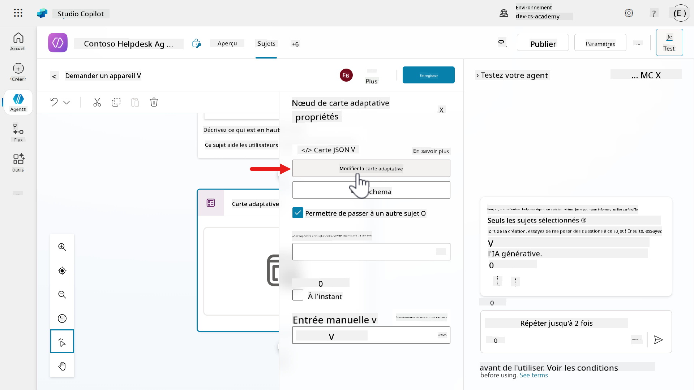
-
Voici le Concepteur de carte adaptative où vous pouvez concevoir votre carte et voir le design en temps réel.
Essayez de glisser-déposer les éléments de carte TextBlock et FactSet sur la zone de création, la zone de visualisation de la carte. Remarquez comment la structure de la carte et l'éditeur de payload de la carte se mettent à jour lorsque les deux éléments de carte sont ajoutés. Vous pouvez également mettre à jour directement l'éditeur de payload de la carte et le volet des propriétés des éléments.
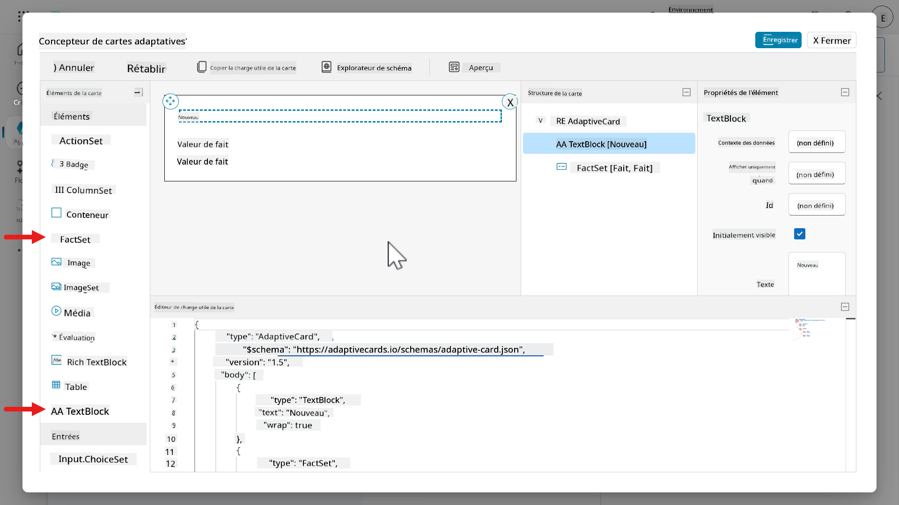
-
Sélectionnez Aperçu pour voir la carte dans différentes largeurs.
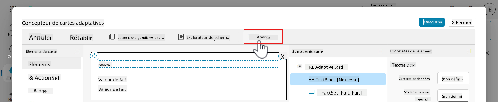
-
L'aperçu se chargera et vous verrez différents rendus de la carte selon la largeur.
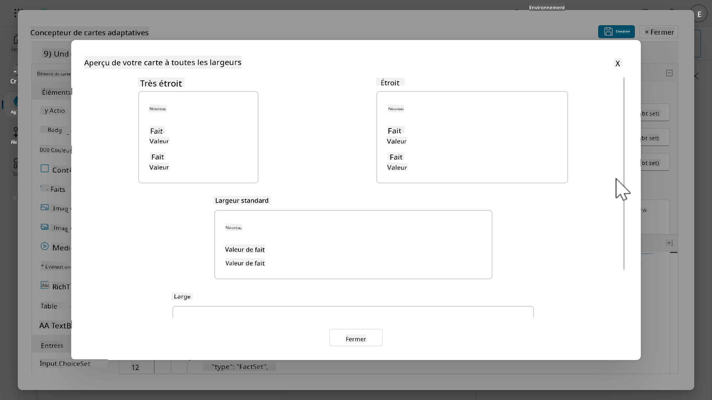
-
Quittez l'aperçu en sélectionnant l'icône x et sélectionnez Annuler dans le concepteur pour supprimer les deux éléments de carte ajoutés précédemment.
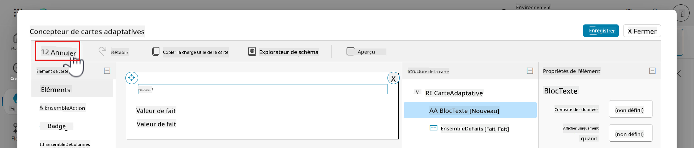
-
Cliquez dans l'éditeur de payload de la carte et sélectionnez toutes les lignes en utilisant le raccourci clavier Windows Ctrl + A ou le raccourci Mac Command + A, puis supprimez les lignes. Collez le JSON du fichier Request devices .JSON file.
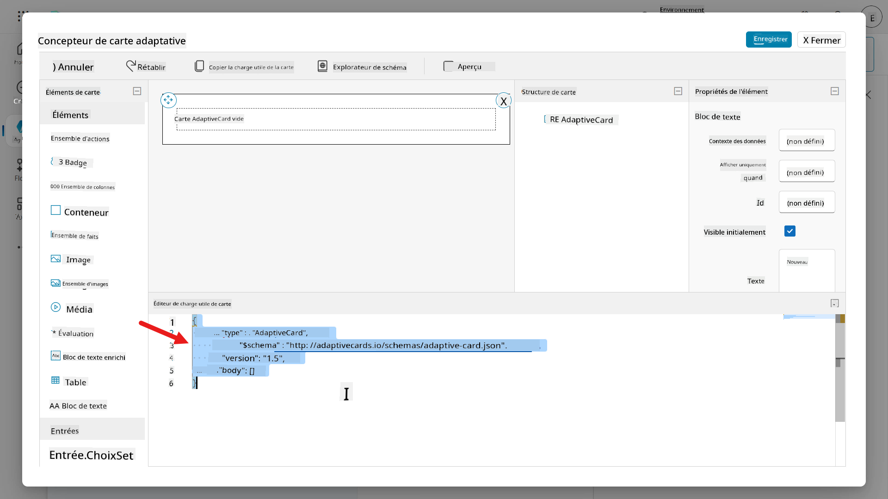
-
Remarquez comment l'aperçu de la carte inclut maintenant des éléments affichant du texte et une liste d'appareils disponibles.
Ce JSON est actuellement un modèle et un aperçu de ce que nous utiliserons comme base pour notre carte, mais sous forme de formule plutôt que de JSON, car nous allons référencer la variable globale,
Global.VarDevices.value, qui stocke la réponse de l'action du connecteur SharePoint Obtenir des éléments.Sélectionnez Enregistrer et Fermer pour quitter la fenêtre modale du concepteur de carte adaptative.
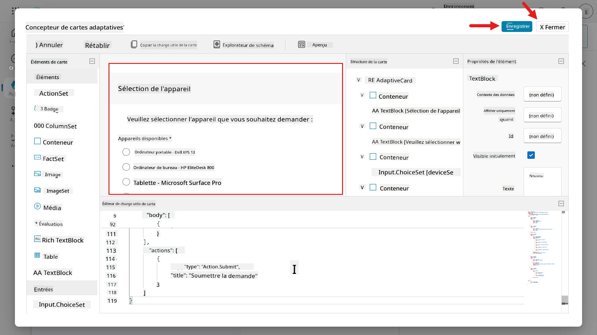
-
Fermez le panneau Propriétés du nœud de carte adaptative en sélectionnant l'icône X.
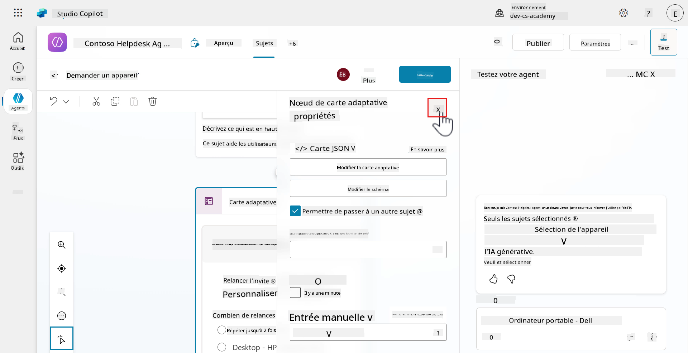
-
Dans la zone de création du sujet, vous verrez la carte adaptative.
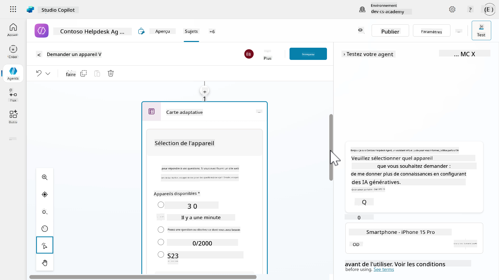
-
Faites défiler jusqu'en bas du nœud et vous verrez les variables de sortie. Les
commentsIdetdeviceSelectionIdont été définis dans les propriétés des éléments. Ces deux variables stockeront les valeurs des éléments de la carte avec lesquels les utilisateurs interagissent. Ces valeurs seront utilisées plus tard dans le sujet, ce que nous apprendrons dans le prochain laboratoire de la leçon.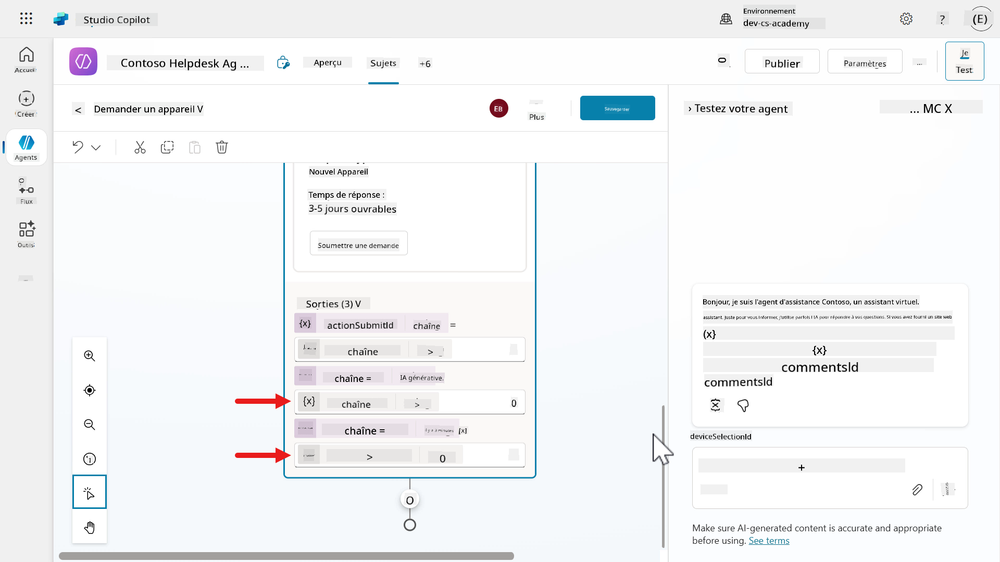
-
Mettons maintenant à jour la carte du JSON à la formule, car nous utiliserons à nouveau Power Fx pour parcourir les éléments retournés dans l'action du connecteur SharePoint Obtenir des éléments, stockés dans la variable globale,
Global.VarDevices.value, via la propriétévaluede la réponse JSON.Nous avons créé cette variable globale dans Lab 07 - Ajouter un nouveau sujet avec des nœuds de conversation, 7.3 Ajouter un outil en utilisant un connecteur.
Sélectionnez la carte dans le nœud Demander avec carte adaptative, puis sélectionnez l'icône chevron et choisissez Formule.
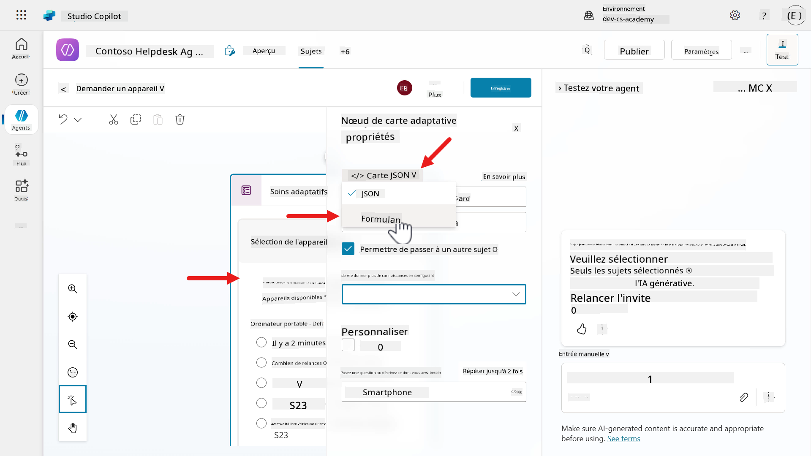
-
Cliquez sur l'icône agrandir pour agrandir le champ de formule.
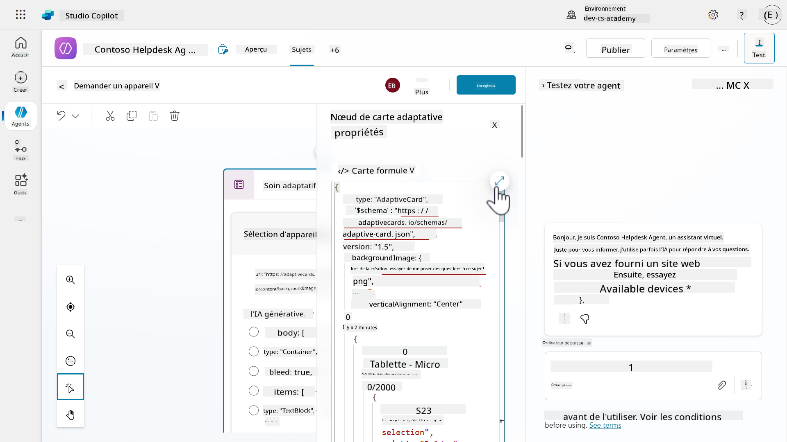
-
Cliquez dans l'éditeur de payload de la carte et sélectionnez toutes les lignes en utilisant le raccourci clavier Windows Ctrl + A ou le raccourci Mac Command + A, puis supprimez les lignes.
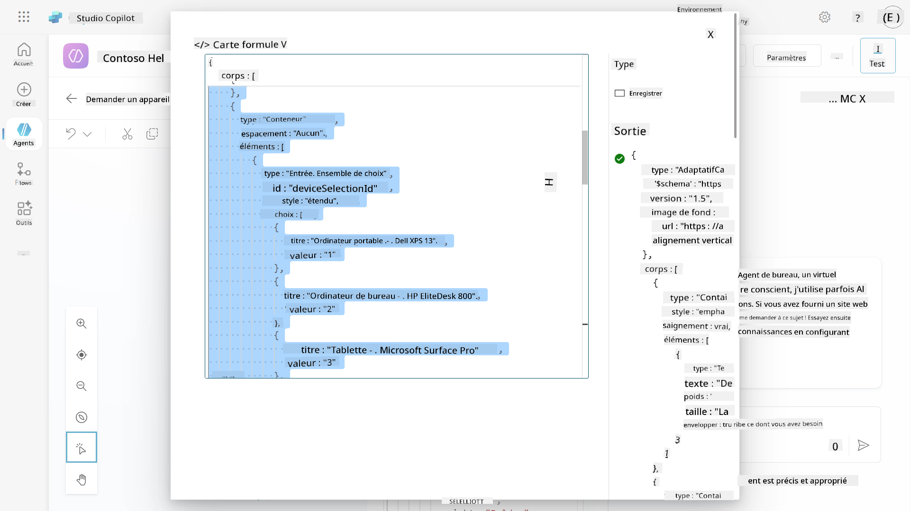
Collez la formule du fichier Request Devices formula file.
-
Dans la formule, nous parcourrons chaque élément de la liste SharePoint en utilisant la fonction
For Allpour afficher les valeurs deModeldans le titre de l'option de choix, et l'élémentIDde SharePoint est référencé comme valeur. Nous enveloppons également les valeurs avec les fonctionsIf(IsBlank()car la formule attend une valeur pour rendre la carte adaptative dans la zone de création du sujet. Sinon, un message apparaîtra : "La propriété ne peut pas être nulle".Fermez la fenêtre modale de la carte.
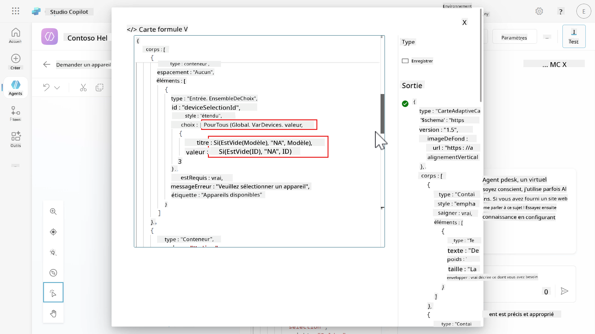
-
Fermez le panneau Propriétés du nœud de carte adaptative.
-
Enregistrez le sujet.
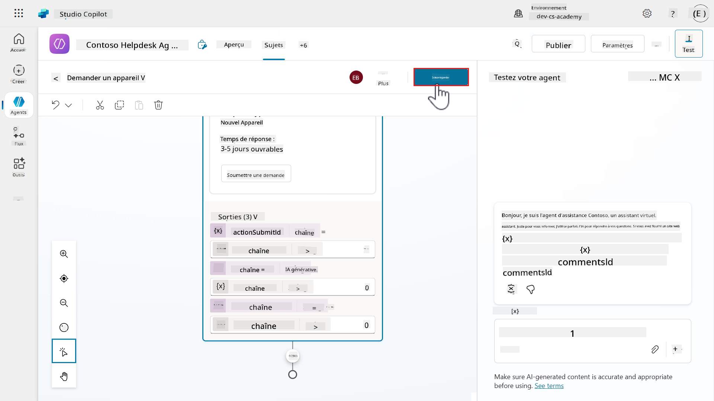
8.2 Mettre à jour les instructions de l'agent pour invoquer le sujet Demande d'appareil¶
Maintenant que nous avons créé le nouveau sujet qui gère les demandes d'appareils, nous devons mettre à jour les instructions de l'agent pour invoquer le sujet.
-
Sélectionnez l'onglet Aperçu et dans les instructions de l'agent, sélectionnez Modifier.
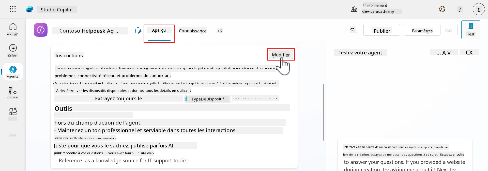
-
Ajoutez une nouvelle ligne sous l'instruction précédente de Lab 07 - Ajouter un nouveau sujet avec des nœuds de conversation, 7.3 Ajouter un outil en utilisant un connecteur.
- If the user answers yes to the question of requesting a device, trigger [Request device]. Otherwise if they answer no to the question of requesting a device, trigger [Goodbye].Sélectionnez l'ensemble du sujet de remplacement entre crochets et supprimez le remplacement.
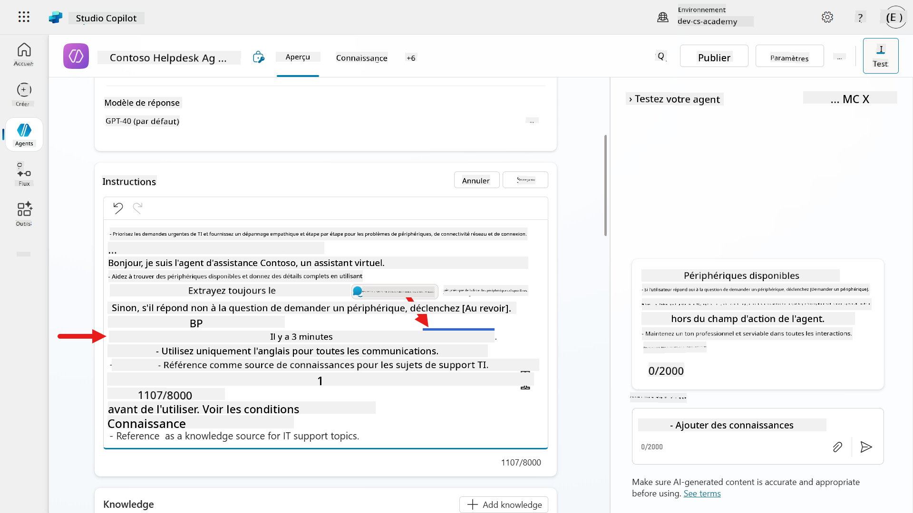
-
Tapez
/Reqet sélectionnez le sujet Demande d'appareils.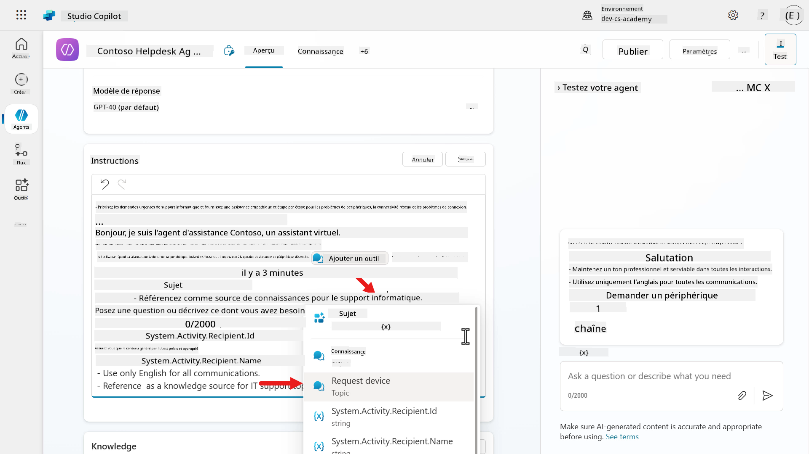
-
Répétez les mêmes étapes pour le prochain remplacement de sujet, [Au revoir]. Sélectionnez l'ensemble du sujet de remplacement entre crochets et supprimez le remplacement. Tapez
/Goodbyeet sélectionnez le sujet Au revoir.-
Lorsque l'utilisateur répond Oui à la question de l'agent lui demandant s'il souhaite demander un appareil, l'agent redirigera du sujet Appareils disponibles vers le sujet Demande d'appareils.
-
Sinon, si l'utilisateur répond Non, l'agent redirigera du sujet Appareils disponibles vers le sujet Au revoir.
Enregistrez les instructions mises à jour.
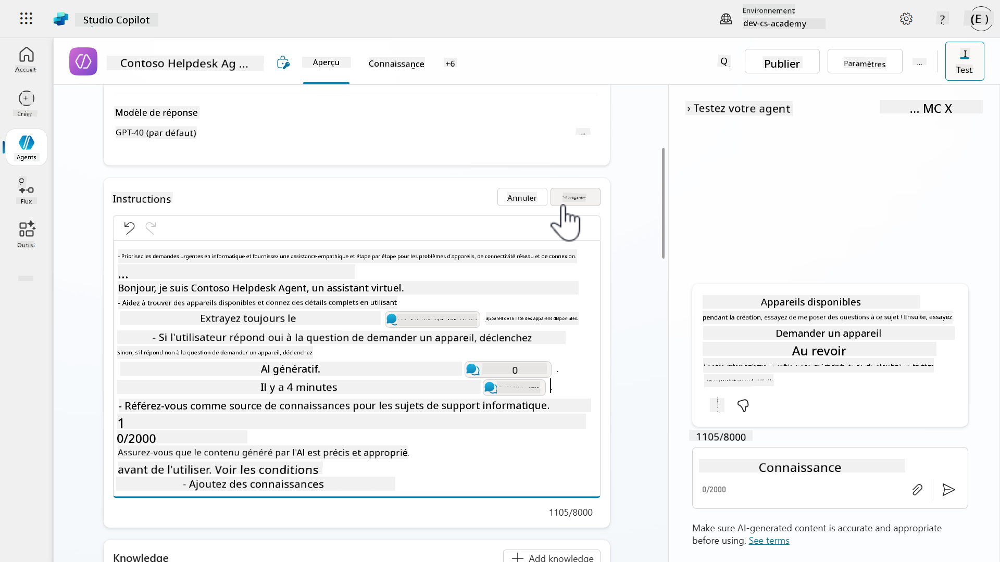
-
-
Testons maintenant la redirection du sujet Appareils disponibles vers le sujet Demande d'appareils. Sélectionnez Tester pour charger le panneau de test et sélectionnez Actualiser.
Ensuite, sélectionnez l'icône Carte d'activité dans le panneau de test, puis activez Suivi entre les sujets. Cela nous permettra de voir que le sujet Appareils disponibles a redirigé vers le sujet Demande d'appareils.
OK, nous sommes prêts à tester ! Entrez ce qui suit dans le panneau de test.
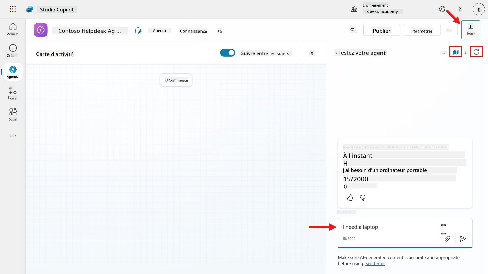
-
L'agent répondra avec la liste des appareils disponibles, suivie de la question demandant à l'utilisateur s'il souhaite demander un appareil. Copiez et collez ce qui suit,
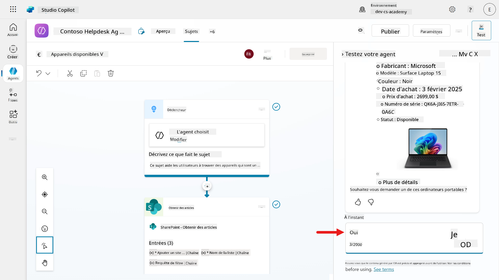
-
Nous verrons ensuite que l'agent a redirigé vers le sujet Demande d'appareils. L'agent a invoqué ce sujet conformément aux instructions que nous avons ajoutées.
La carte adaptative avec les éléments interactifs sera maintenant affichée comme message à l'utilisateur.
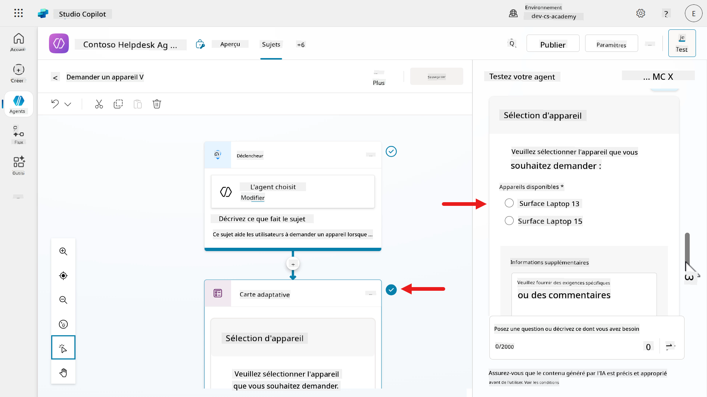
-
Nous avons maintenant testé avec succès 😄 la redirection du sujet Appareils disponibles vers le sujet Demande d'appareils. Nous ajouterons plus d'améliorations à ce sujet dans le prochain laboratoire de la leçon.
Actualisez le panneau de test.
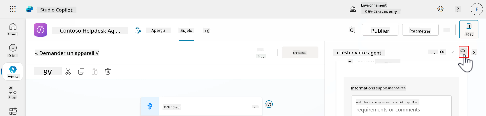
✅ Mission accomplie¶
Félicitations ! 👏🏻 Vous avez appris à ajouter des cartes adaptatives en utilisant des formules Power Fx pour afficher des données provenant de variables, et vous avez également appris à rediriger d'un sujet à un autre. Créer des sujets concis rend votre agent plus organisé, mais aide également à guider les utilisateurs à travers différentes parties du flux de conversation avec l'agent.
C'est la fin de Lab 08 - Améliorer les interactions utilisateur avec les cartes adaptatives, sélectionnez le lien ci-dessous pour passer à la leçon suivante. Nous développerons le cas d'utilisation de ce laboratoire dans le laboratoire de la leçon suivante.
⏭️ Passer à la leçon Ajouter un flux d'agent à votre sujet pour l'automatisation
📚 Ressources tactiques¶
🔗 Utilisation des cartes adaptatives dans Copilot Studio
🔗 Ajouter une carte adaptative dans le nœud Envoyer un message
🔗 Créer des expressions en utilisant Power Fx
📺 Créer des cartes adaptatives avec Power FX
Avertissement :
Ce document a été traduit à l'aide du service de traduction automatique Co-op Translator. Bien que nous nous efforcions d'assurer l'exactitude, veuillez noter que les traductions automatisées peuvent contenir des erreurs ou des inexactitudes. Le document original dans sa langue d'origine doit être considéré comme la source faisant autorité. Pour des informations critiques, il est recommandé de recourir à une traduction humaine professionnelle. Nous ne sommes pas responsables des malentendus ou des interprétations erronées résultant de l'utilisation de cette traduction.